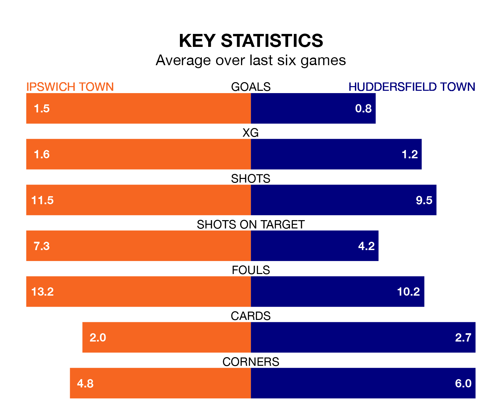

Relegation candidates Huddersfield Town face a challenge away against high-flying Ipswich Town at Portman Road on Saturday.
Huddersfield Town are 23rd in the EFL Championship table, and have picked up nine wins and 18 draws in their 45 games to date.
The Blues, meanwhile, are second in the standings with 93 points, having won 27 and drawn 12, and are four points behind table-toppers Leicester City.
With 90 goals in 45 games so far this season, Ipswich are the league's highest scorers with 2.0 goals per game. And they are conceding at an average rate, letting in 57 goals at a rate of 1.3 per game.
Huddersfield, meanwhile, are below average scorers, with 1.1 goals per game, compared to a league average of 1.3. They have conceded 1.7 goals per game.
In the last 10 years, Ipswich and Huddersfield have played each other on seven occasions. Ipswich won one of them, Huddersfield three, and they drew three times.
On average, the Blues scored 0.7 goals and the Terriers 1.1 in those matches.
Their last meeting was on September 30, when they played out a 1-1 draw.
In Václav Hladký, Ipswich Town can rely on one of the league's safest pair of hands. He has kept 14 clean sheets in his 45 appearances this season, and only two other 'keepers – Leeds United's Illan Meslier and West Bromwich Albion's Alex Palmer – have been able to prevent the opposition scoring on more occasions in EFL Championship.
In Huddersfield Town's net, Lee Nicholls has seven clean sheets in 37 games. He has conceded a goal every 61 minutes, 30% more often than the 81 minutes between goals for Hladký.
The Blues are in mixed form in EFL Championship, with two wins and three draws from their last six games.
With a win and three draws over that period, the Terriers' form is worse – they have taken six points from 18, compared to the hosts' nine.
Ipswich's last match was on Tuesday, a 2-1 win against Coventry City, with Cameron Burgess and Kieffer Moore getting the goals for the Blues.
Huddersfield drew 1-1 with Birmingham City last time out, on Saturday, with Rhys Healey on the scoresheet.
Saturday's match will be refereed by Simon Hooper, who has taken charge of four EFL Championship games so far this season, issuing no red cards and booking 19 players. He has not awarded any penalties.
He is yet to oversee a match featuring either Ipswich or Huddersfield this season.
Updated: 12:00 (UTC), 02/05/24